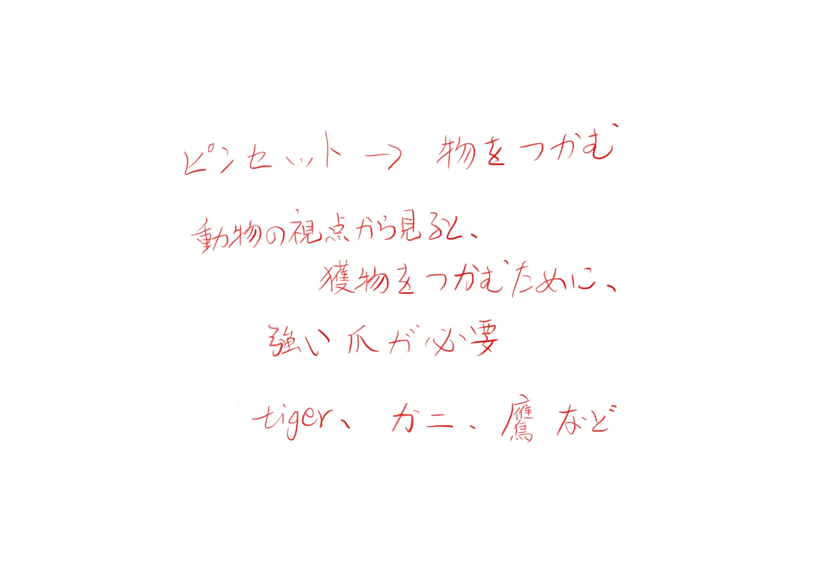
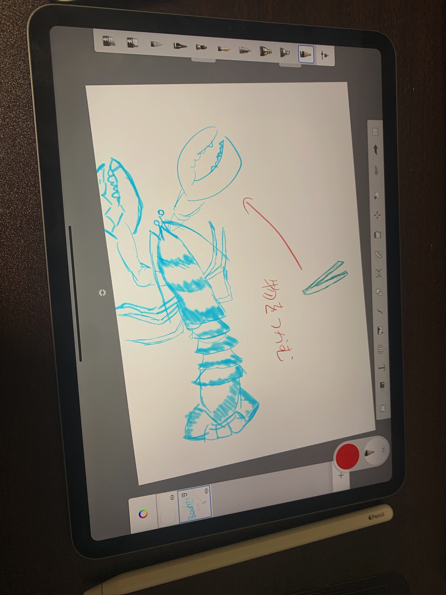
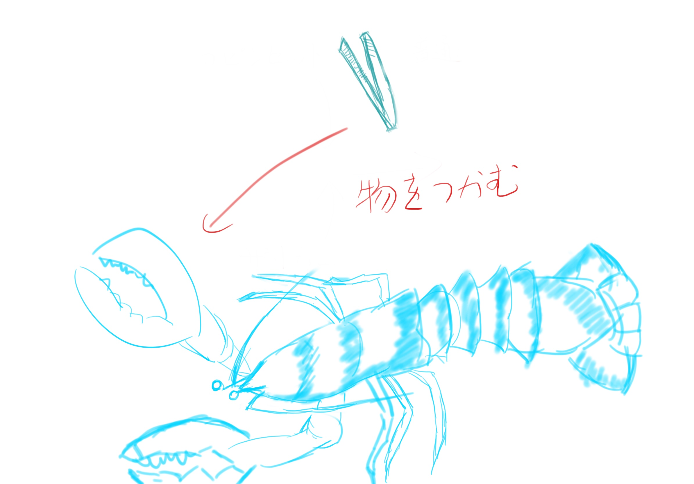
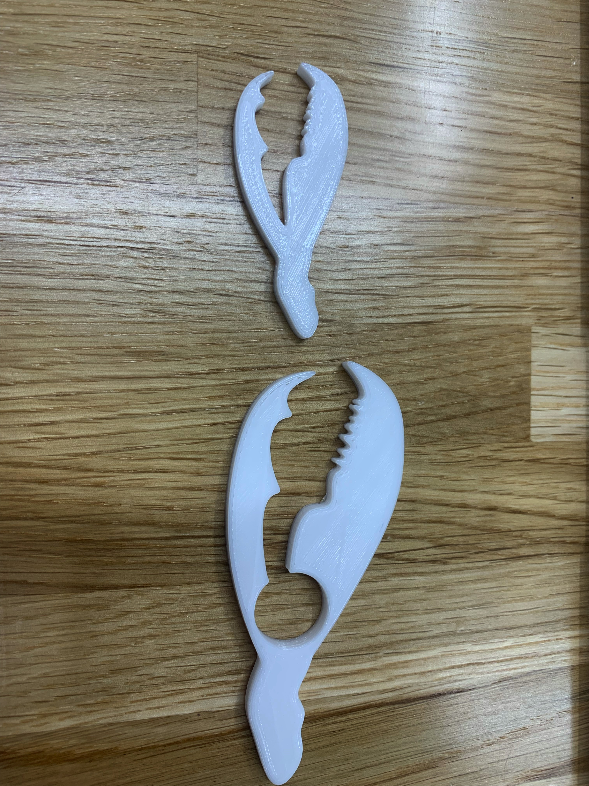
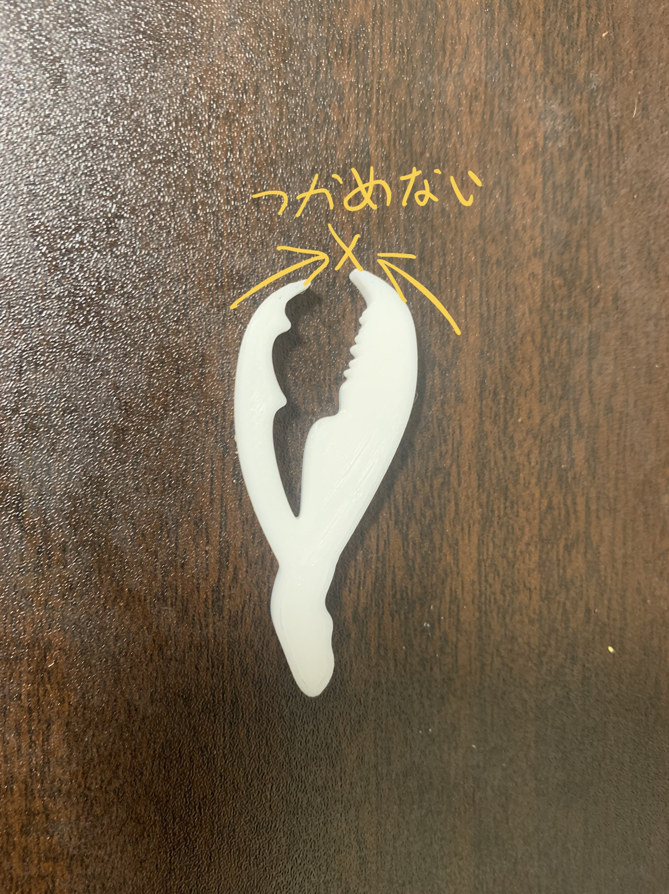
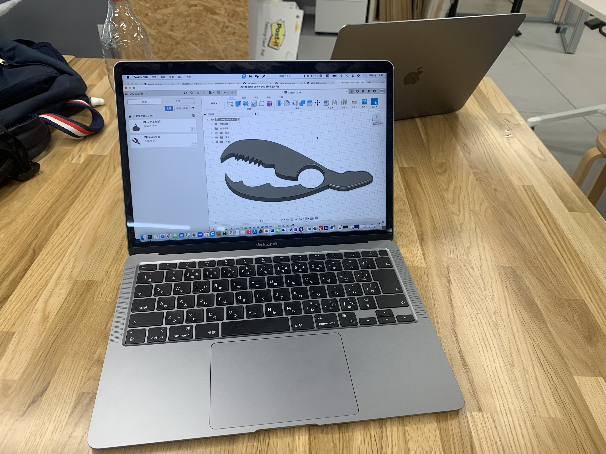
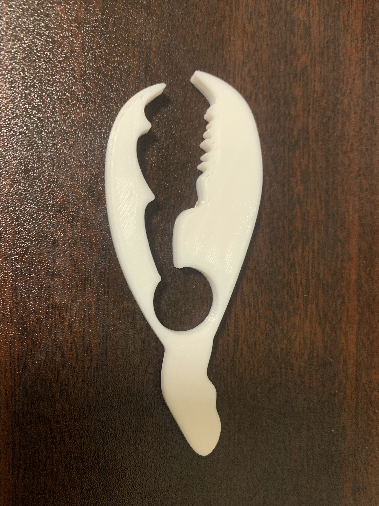

ザリガニピンセット
流れ
アイデア発想
ipadにノートして、ピンセットの機能を考えながら、異なる視点から見ていた。そこで、ピンセットとは、小さいものをつかむために使える道具なので、「掴む」をポイントにした。さらに、世の中、自然中にも常に「掴む」という動作が発生している。例えば、虎、蟹、鷹などの野生動物というと、もともと獲物を掴むために、必要な武器を持っている。

スケッチ
ザリガニを原型にして、スケッチを始めた。なぜならば、ザリガニのペンチは本来獲物をしっかり掴むために存在してあるので、つかみ強そうと思っている。


fusion360でモデリング

VER01

問題点��：小さくて硬いので、指で力を出しても掴めない
VER02


ピンセットの根部に丸穴を開いて、両側をより薄くて、硬さを弱させ。よく掴めるになりました
使用動画
youtube